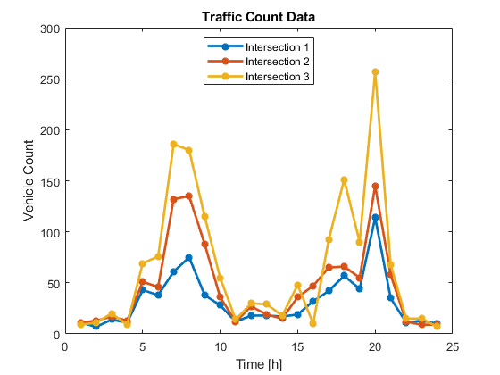
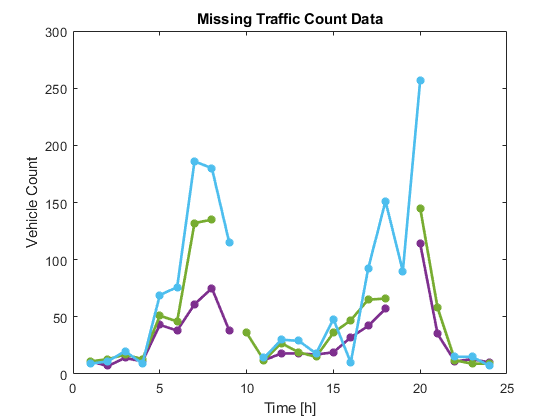
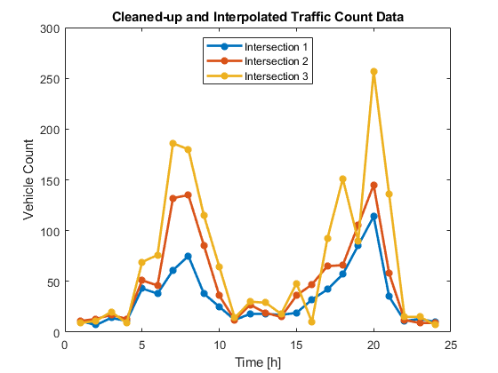

Contents
%========================================================================== % Name : demoENG101.m % Author : Mert Turkol % Date : 07/30/2018 % Copyright : GNU General Public License % Description : This script executes the statements and expressions % presented in the video demonstration for ENG101 GSI % application. The examples demonstrated by this code % mainly cover simple yet important Data Handling % basics. During the demo we will also talk about % various topics like array manipulation, random# % generation and logical indexing as well as some % efficient code-writing practices (i.e. vectorization) %==========================================================================
Loading and displaying data
Load some data from a space-delimited file that comes preinstalled with MATLAB: Three sets of hourly traffic counts, recorded at three different town intersections over a 24-hour period.
rawData = load('count.dat'); %also works for comma-separated txt files % for excel spreadsheets, use: xlsData = xlsread('someFile.xls') or % for csv comma-separated files, use: csvData = csvread('someFile.csv') whos rawData %list chosen variable name, size and type disp(rawData) %display the data
Name Size Bytes Class Attributes
rawData 24x3 576 double
11 11 9
7 13 11
14 17 20
11 13 9
43 51 69
38 46 76
61 132 186
75 135 180
38 88 115
28 36 55
12 12 14
18 27 30
18 19 29
17 15 18
19 36 48
32 47 10
42 65 92
57 66 151
44 55 90
114 145 257
35 58 68
11 12 15
13 9 15
10 9 7
Plotting data
[nRow, nCol] = size(rawData); t = (1:nRow)'; %time vector with unit hourly increments % General expression for 'n' samples between 'tStart' and 'tFinal' is: % t = tStart:(tFinal-tStart)/(n-1):tFinal; hRaw = plot(t, rawData, '-*', 'LineWidth', 2); %store plot handle graphName = 'Traffic Count Data'; title(graphName); xAxisName = 'Time [h]'; xlabel(xAxisName), yAxisName = 'Vehicle Count'; ylabel(yAxisName), lineName = ['Intersection 1'; 'Intersection 2'; 'Intersection 3']; legend(lineName, 'Location', 'north');
Making a scenario: Random missing values in data
Let's randomly contaminate data by replacing two entries in each column with 'NaN's (Not-a-Number) on purpose to simulate missing data behavior. 'NaN's appear as a result of undefined operation, such as 0/0.
SEEDVAL = 734; rng(SEEDVAL); %set random seed for repeatibility NMISS = 2; rndmSubs = randi([2 nRow-1], [NMISS nCol]); % randi([startVal endVal], [size1 size2 ... sizeN] draws random ints % from the uniform distribution btwn. startVal - endVal, and returns % [size1 x ... x sizeN] array. % NOTE: 'rand()' draws real numbers from the uni. distro., whereas % 'randn()' does the same from normal distro. % Along the same column, we would like two row-subscripts chosen % randomly to be different to prevent replacing the same entry twice. % First, take successive differences along the rows of 'rndmSubs'. isUnique = all( diff(rndmSubs) ); % The resulting row vector is then evaluated and returns '1' % if and only if ALL differences are non-zero. This will be the % loop condition to make sure we have unique row-subscripts % selected along each column. % NOTE: any( x ) returns 1 if ANY entry is nonzero while(~isUnique) %iterate until condition is false disp('Random matrix of integer subscripts with equal values along column(s):'); disp(rndmSubs); %randomly shuffle the array: rndmSubs = rndmSubs( randperm( numel(rndmSubs) ) ); %reshape vector into a matrix: rndmSubs = reshape(rndmSubs, NMISS, []); %assign the new value of loop-variable: isUnique = all( diff(rndmSubs) ); end % We randomly chose two integer subscripts in the [2, 23] interval % to replace two entries with corresponding row indices along each % column of rawData. rndmSubs is of size [2x3] and has non-equal % integers within each column. disp('Unique integer subscripts to replace with NaNs in each column: '); disp(rndmSubs); % Alteratively, we could display our matrix of random integers % that are unique per column, with fprintf() : % fprintf( [ '\nUnique integer subscripts to replace with NaNs ', ... % 'in each column: \n', ... % repmat('\t\t%d %d %d\n', 1, NMISS) ], rndmSubs' );
Random matrix of integer subscripts with equal values along column(s):
19 10 19
9 10 21
Unique integer subscripts to replace with NaNs in each column:
10 9 21
19 19 10
Replacing data with missing values
missData = rawData; %define a new data matrix same as the original for iCol = 1:nCol %loop over columns of data missData( rndmSubs(:,iCol), iCol ) = nan; %replace with NaN end
Pre-process, clean and interpolate data
We will now plot the data with missing values to see what it looks like. Assuming no previous knowledge about the contaminated data's content (except its size), we will identify where the missing values are. Final step will be to clean those values and estimate w/ linear interpolation.
hold on; delete(hRaw); legend('off'); plot(t, missData, '-*', 'LineWidth', 2); title( horzcat('Missing ', graphName) ); hold off; hasNan = any( isnan( missData(:) ) ); %logical to check for NaNs if (hasNan) % Remove NaNs from data, interpolate the missing values and plot warning('Data has missing value(s) in it!') interpData = zeros(nRow, nCol); %var. to assign interpolated vals figure; %create new figure to plot the interpolated data for iCol = 1:nCol %loop over columns of data %utilize logical indexing to find the row-subscripts of valid data cleanSubs = ~isnan( missData(:, iCol) ); cleanVals = missData(cleanSubs, iCol); % Interpolate the values at query points in 't' vector interpData(:, iCol) = interp1q( t(cleanSubs), cleanVals, t); % Plot each interpolated column data one after another plot( t, interpData(:, iCol), '-*', 'LineWidth', 2); hold on; %keep the plotted lines on the figure end % Set graph properties xlabel(xAxisName), ylabel(yAxisName), title( horzcat('Cleaned-up and Interpolated ', graphName) ); legend(lineName, 'Location', 'north'); hold off; end
Warning: Data has missing value(s) in it! 
Computing RMS Error of interpolation with vectorized vs. looped code
We will compute root mean squared error (RMSE) of interpolation for missing vals in two different approaches.
timerRmse = zeros(1, 2); %initialize timer variable % We will also measure and compare the time these approaches take: tic; %time the vectorized approach in computing rmsErr rmsErr = sqrt( 1/nRow * sum( ( interpData - rawData ).^2 ) ); timerRmse(1) = toc; tic; %time the looped approach in computing rmsErr for iCol = 1:nCol rmsErr(iCol) = sqrt( 1/nRow * ... sum( ( interpData(:, iCol) - ... rawData(:, iCol) ).^2 ) ); end timerRmse(2) = toc; % Report RMSE of interpolated vals. with respect to original data fprintf( ['RMSE between the interpolated and original data: ', ... '%.2f %.2f %.2f \n'], rmsErr(:) ); % Compare elapsed time using vectorized vs. looped code fprintf( ['\nRatio of elapsed time to compute RMSE -> ', ... 'Vectorized / Looped: %.2f'], timerRmse(1)/timerRmse(2) );
RMSE between the interpolated and original data: 8.49 10.32 14.02 Ratio of elapsed time to compute RMSE -> Vectorized / Looped: 0.37